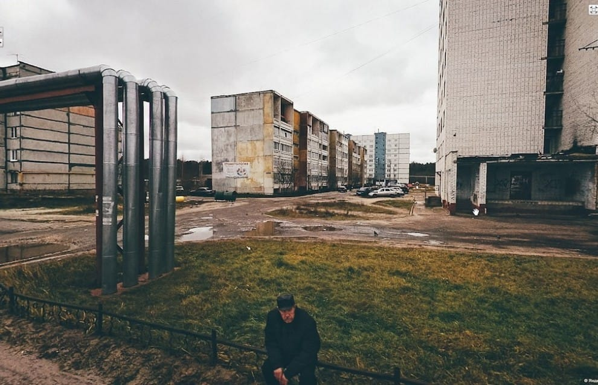

Наглядная демонстрация того, как работает ДВС или реактивный двигатель, или пистолет. Клево!
Бытие

Чувак выбрал кадры из видов на Яндекс.Панорамах. Офигенно.
Наадя
Не знаю, что вы там слушаете, а я вот слушаю Наадю!
Школа
Водил тут ребенка на подготовительные курсы к школе. В школу.
Ощущения, что вернулся в 1987 год. Маразм и уебанство, увы, никуда не делись.
It'll be exciting times
Pure Imagination
Шикарно!
Chet Faker - Gold
The Wolf of Wall Street

Давно так не ржал. Отличное кино.
16-04-2014
Когда обойдешь мир, везде найдешь много зла, притеснений, неправды, а в России, может быть, более чем в других государствах. Не оттого, чтоб в России люди были хуже, чем в Западной Европе; напротив я думаю, что русский человек лучше, добрее, шире душой, чем западный; но на Западе против зла есть лекарства: публичность, общественное мнение, наконец свобода, облагораживающая и возвышающая всякого человека. — Михаил Бакунин
Rick & Morty
Сумашедший сериал.